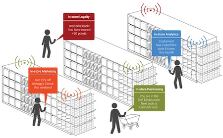
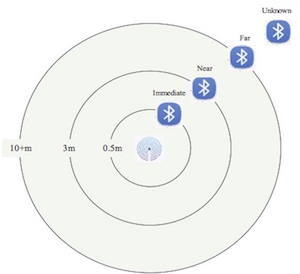
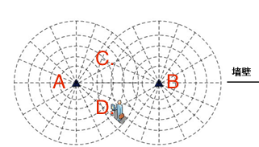
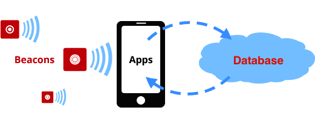

iBeacon是一种基于低功耗蓝牙(Bluetooth Low Energy)的信号广播设备，每一个设备都有一个唯一的ID。我们把iBeacon设备放在一个区域，当用户携带着智能手机走进这个区域时，能够收到含有iBeacon设备ID的广播信号，以此知道自己所处的区域。目前，iBeacon引申出了很多新潮的应用，比如，帮助您在停车场中找到爱车，或者在零售店中根据所处位置提供优惠券，或者在人头攒动的商场中找到那个Ta。
iBeacon的信号覆盖范围一般为10~20米，信号强度值(RSSI, Received Signal Strength Indication)会随着距离的远近而变化。我们可以通过这个数值作为定位的依据。如，将RSSI分成几个等级，分别对应不同的距离，手机APP根据当前的RSSI判断用户所属的位置：
如果需要提高定位精度，可以在一个区域内增加部署iBeacon设备。用户手机接收到多个iBeacon设备的广播和其RSSI，通过定位算法精确的计算出用户所在的方位。定位算法有两种类型：
考虑一个场景中iBeacon-1和iBeacon-2分别处于A位置和B位置。当用户处于两个iBeacon的信号范围内时，可以获得两个iBeacon的RSSI值，如-70db和-80db，绘制-70db和-80db的等位线得到两个焦点C和D。定位算法根据实际情况淘汰一个交叉点，如C点其实是墙壁外侧，于是将另一个交叉点D点作为真实的位置，绘制于地图。当然，如果有办法获取更多iBeacon的RSSI值会有利于精细定位，比如如果在C点部署一个iBeacon-3，则手机同时也受到iBeacon-3的RSSI，就很容易判断出用户当前的位置是D点。
基于样本的算法分为两个阶段：
i. 样本采集阶段：在整个应用场所部署好iBeacon设备。选取一些固定参考点，在每个参考点上，把所有能扫描到iBeacon的信号强度收集起来，存放至样本库。
ii.样本对比阶段：当用户处于未知位置，把这时扫描到的iBeacon的信号强度和样本库中的数据对比，找到最大相似点，即认为是iBeacon当前所在位置，绘制地图位置信息。
请发邮件至hello@jumacc.com，客服人员会和您联系。